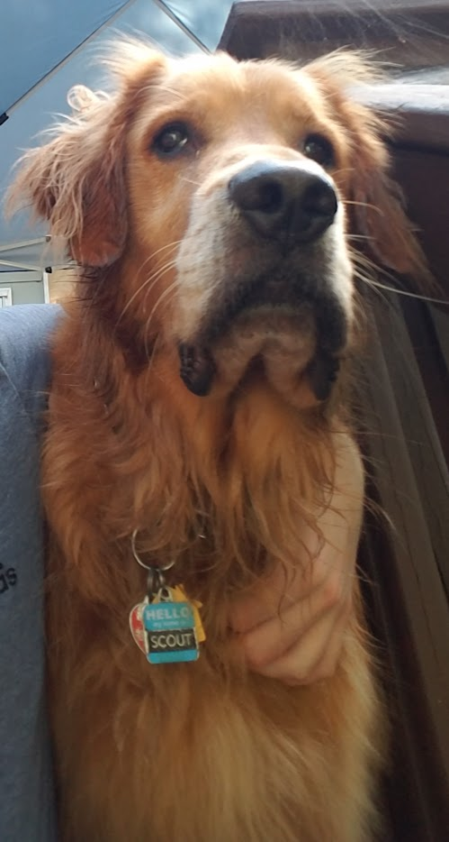

This page is dedicated to my dog Scout. He was a huge part of my life, even if he was just a dog, and I felt like he deserved some sort of recognition. He mattered to me, and I just want that to be known.
Scout, you are sorely missed by everyone who had the pleasure of meeting you. You left a mark on everyone that I don't think will be forgotten. I just wish you could know how much we all wanted you to stay around longer. I tried to give you the best life I could buddy, and you will live on through me forever, you helped me become the person I am today.
Rest well, my scouty boy.